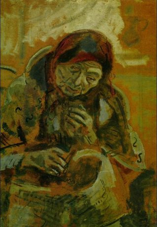

Marc Chagall,1887 - 1985,Primitivism,"French,Jewish,Belarusian","Marc Zakharovich Chagall ( shə-GAHL; born Moishe Zakharovich Shagal; 6 July [O.S. 24 June] 1887 – 28 March 1985) was a Russian-French artist of Belarusian Jewish origin. An early modernist, he was associated with several major artistic styles and created works in virtually every artistic format, including painting, book illustrations, stained glass, stage sets, ceramic, tapestries and fine art prints.",http://en.wikipedia.org/wiki/Marc_Chagall,239
